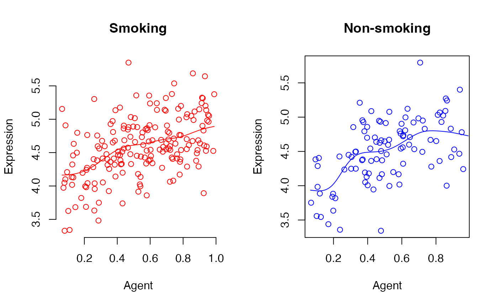

DRDNetPro is a statistical learning algorithm for recovering disease risk-associated pseudo-dynamic networks (DRDNet) from steady-state data. It incorporates risk prediction model, a varying coefficient model, multiple ordinary differential equations, and group lasso estimation to learn a series of networks.This tutorial will provide detailed information for the second step of implementing the DRDNet. The data that are involved in this tutorial are [pheno_together], [data_vessel], [data_vessel_processed], [index_utilized], [data.vcfit], [base.output], [network.output].
If the user hasn’t gone through the Tutorial 1, please visit Tutorial 1 for the first step of predicting the agent.
The followings are necessary packages we need to train the network.
library(DRDNetPro)
library(np)## Nonparametric Kernel Methods for Mixed Datatypes (version 0.60-11)
## [vignette("np_faq",package="np") provides answers to frequently asked questions]
## [vignette("np",package="np") an overview]
## [vignette("entropy_np",package="np") an overview of entropy-based methods]library(splines2)
library(grpreg)
library(Matrix)
readRDSFromWeb <- function(ref) {
readRDS(gzcon(url(ref)))
}Prepare the data for training the network
Before recovering the network, the users need to preprocess the gene expression data. This procedure will involve THE following two steps: gene expression preprocess and gene selection.
Filtering and transformation
First, read the data pheno_together and data_vessel.
#read the data
pheno_together<-read.csv("https://github.com/chencxxy28/DRDNetPro/raw/main/vignettes/data/pheno_together.csv") # phenotype data
data_vessel<-read.csv("https://github.com/chencxxy28/DRDNetPro/raw/main/vignettes/data/data_vessel.csv") # gene expression dataSelect genes with positive expressions and do log transformation.
rownames(data_vessel)<-data_vessel[,1]
data_vessel<-data_vessel[,-1]
dim(data_vessel)## [1] 56202 299#delete gene with all zeros
row_mean<-apply(data_vessel,1, mean)
data_vessel<-data_vessel[row_mean>0,]
dim(data_vessel)## [1] 51925 299#let the gene expression equal to zero if it's less than 1 level:
data_vessel[data_vessel<=1]<-0
dim(data_vessel)## [1] 51925 299which(data_vessel<=1 & data_vessel>0)## integer(0)#count zeros in each row:
zero_row<-apply(data_vessel,1,function (x) length(which(x==0)))
summary(zero_row)## Min. 1st Qu. Median Mean 3rd Qu. Max.
## 0.0 10.0 297.0 203.3 299.0 299.0#do log transformation
data_vessel[data_vessel!=0]<-log(data_vessel[data_vessel!=0])
dim(data_vessel)## [1] 51925 299#set threshold about zeros:
data_vessel<-data_vessel[zero_row<=0,]
dim(data_vessel)## [1] 11466 299write.csv(data_vessel,"data_vessel_processed.csv",row.names =F)The reprocessed data can be directly loaded by
data_vessel<-read.csv("https://github.com/chencxxy28/DRDNetPro/raw/main/vignettes/data/data_vessel_processed.csv") # read preprocessed gene expression dataGene selection (screening)
After gene expression preprocessing, the user should conduct gene selection. First, create the data for screening
vessel_subject_id<-substring(colnames(data_vessel),6,10)
vessel_subject_id<-ifelse(substring(vessel_subject_id,5,5)==".",substring(vessel_subject_id,1,4),substring(vessel_subject_id,1,5))
vessel_together<-data.frame(cbind(vessel_subject_id,1))
colnames(vessel_together)<-c("id","haha")
index_data<-merge(x=vessel_together,y=pheno_together,by.x="id",all.x=T,sort=F)
dim(index_data)## [1] 299 8Run the function spearman_screen to screen the genes by
Spearson correlation. The screening process should be done separately in
group. Run the function test_screen to conduct the
hypothesis testing. Then combine the genes selected by both screening
and testing.
#screening for smoking group
data_vessel_smoker<-data_vessel[,index_data$smoke==1]
index_data_smoker<-index_data[index_data$smoke==1,]
screening_index_smoking<-spearman_screen(index_data=index_data_smoker,data_vessel=data_vessel_smoker,size=40)
screening_index_smoking
#screening for non-smoking group
data_vessel_nsmoker<-data_vessel[,index_data$smoke==0]
index_data_nsmoker<-index_data[index_data$smoke==0,]
screening_index_nsmoking<-spearman_screen(index_data=index_data_nsmoker,data_vessel=data_vessel_nsmoker,size=40)
screening_index_nsmoking
sig_all_index<-test_screen(data_vessel,group=index_data$hyper,covariate=index_data$smoke)
index_utilized<-unique(c(screening_index_smoking,screening_index_nsmoking,sig_all_index))
saveRDS(index_utilized, file = "index_utilized.rds")
length(sig_all_index)The selected genes can be also directly accessed by running the code
index_utilized<-readRDSFromWeb( "https://github.com/chencxxy28/DRDNetPro/raw/main/vignettes/data/index_utilized.rds")There are 85 genes selected. Finally, construct the data for the following network learning. These data are ordered in terms of imputed agent
index<-as.numeric(as.matrix(index_data$rate,ncol=1))
data_vessel_order<-data_vessel[,order(index)] #order the gene matrix based on the order of the agent
x_original<-t(data_vessel_order)
data_observe<-x_original[,index_utilized] #focus on the selected 85 gene expressions
agent<-index[order(index)] #order the agent
smk_cov<-index_data$smoke[order(index)]Train the varying coefficient model
Before constructing the network, each selected gene should be fitted by varying coefficient model. Run the following code to delete samples that are too close to each other in terms of agent values.
#further refine the data by deleting the data with agent too close to each other, this step is highly recommended in practice. Here we set the threshod=0.0001
data_observe<-data_observe[c(1,diff(agent,lag=1))>=0.0001,]
x_cov<-smk_cov[c(1,diff(agent,lag=1))>=0.0001]
agent<-agent[c(1,diff(agent,lag=1))>=0.0001]Run the function vc.fit to fit the varying coefficient
model with smoking as the covariate.
set.seed(4351)
data.vcfit<-vc.fit(agent=agent,data_observe=data_observe,x_cov=x_cov)
saveRDS(data.vcfit, file = "data.vcfit.rds")The users can also directly load the fitted model
data.vcfit<-readRDSFromWeb("https://github.com/chencxxy28/DRDNetPro/raw/main/vignettes/data/data.vcfit.rds")Run the following codes to visualize the fitting curves
id_sub<-8
{par(mfrow = c(1, 2))
#for smoking group
plot(x=agent[x_cov==1],y=data_observe[x_cov==1,id_sub],col="red",frame = FALSE,ylab="Expression",xlab="Agent",main="Smoking")
lines(y=data.vcfit$data_fitted[,id_sub]+data.vcfit$data_fitted_cov[,id_sub],x=agent,col="red")
#for non-smoking group
plot(x=agent[x_cov==0],y=data_observe[x_cov==0,id_sub],col="blue",ylab="Expression",xlab="Agent",main="Non-smoking")
lines(y=data.vcfit$data_fitted[,id_sub],x=agent,col="blue")}
Generate base matrix for the network model
The base matrix is the key component for the network learning in a
non-parametric manner. Run the function base.construct to
construct the base matrix for the varying intercept and base matrix for
the varying coefficient of smoking
data_fitted<-data.vcfit$data_fitted
data_fitted_cov<-data.vcfit$data_fitted_cov
base.output<-base.construct(data_observe=data_observe,
data_fitted=data_fitted, degree=3,len.knots=3,
data_fitted_cov=data_fitted_cov,
agent=agent,
x_cov=x_cov)
saveRDS(base.output, file = "base.output.rds")The constructed base matrices can be also loaded by
base.output<-readRDSFromWeb("https://github.com/chencxxy28/DRDNetPro/raw/main/vignettes/data/base.output.rds")Train the network model
With base matrices, it is ready to learn the network by the function
network.learn
X_big<-base.output$X_big
X_big_cov<-base.output$X_big_cov
X_big_int<-base.output$X_big_int
X_big_int_cov<-base.output$X_big_int_cov
network.output<-network.learn(data_observe=data_observe,
x_cov=x_cov,
X_big_int=X_big_int,
X_big_int_cov=X_big_int_cov,
agent=agent,
degree=3,
len.knots=3,
cv=TRUE,
nfolds=20,
alpha=1)
## [1] 1
## [1] 2
## [1] 3
## [1] 4
## [1] 5
## [1] 6
## [1] 7
## [1] 8
## [1] 9
## [1] 10
## [1] 11
## [1] 12
## [1] 13
## [1] 14
## [1] 15
## [1] 16
## [1] 17
## [1] 18
## [1] 19
## [1] 20
## [1] 21
## [1] 22
## [1] 23
## [1] 24
## [1] 25
## [1] 26
## [1] 27
## [1] 28
## [1] 29
## [1] 30
## [1] 31
## [1] 32
## [1] 33
## [1] 34
## [1] 35
## [1] 36
## [1] 37
## [1] 38
## [1] 39
## [1] 40
## [1] 41
## [1] 42
## [1] 43
## [1] 44
## [1] 45
## [1] 46
## [1] 47
## [1] 48
## [1] 49
## [1] 50
## [1] 51
## [1] 52
## [1] 53
## [1] 54
## [1] 55
## [1] 56
## [1] 57
## [1] 58
## [1] 59
## [1] 60
## [1] 61
## [1] 62
## [1] 63
## [1] 64
## [1] 65
## [1] 66
## [1] 67
## [1] 68
## [1] 69
## [1] 70
## [1] 71
## [1] 72
## [1] 73
## [1] 74
## [1] 75
## [1] 76
## [1] 77
## [1] 78
## [1] 79
## [1] 80
## [1] 81
## [1] 82
## [1] 83
## [1] 84
## [1] 85summary(network.output$gene_whole_cov[10,])## Min. 1st Qu. Median Mean 3rd Qu. Max.
## -0.05486 -0.00433 0.00166 0.18964 0.00901 46.00000data.list.t3<-list(data_observe=data_observe,
x_cov=x_cov,
agent=agent)
saveRDS(network.output, file = "network.output.rds")
saveRDS(data.list.t3, file = "data.list.t3.rds")The results from network learning can be also loaded by
network.output<-readRDSFromWeb("https://github.com/chencxxy28/DRDNetPro/raw/main/vignettes/data/network.output.rds")This is the end of the Tutorial 2, please visit Tutorial 3 for the next step of visualizing the results.